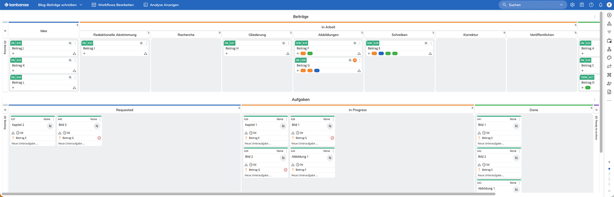
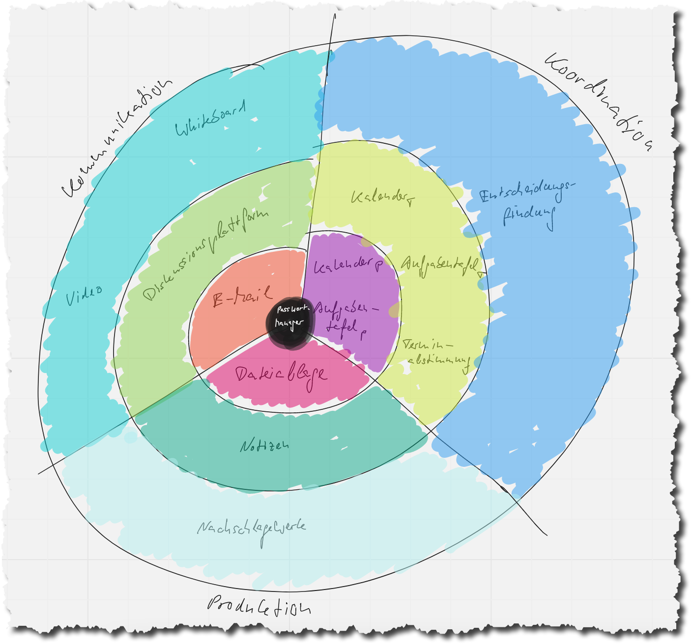

Digitale Tools für Zusammenarbeit im Office
Es braucht mehr als Email und Branchensoftware für Überblick und Zusammenarbeit
Die Arbeit im Office ist digital. Egal, was Ihre fachliche Expertise ist, Sie kommen heutzutage nicht umhin, sich mit einer Vielzahl von digitalen Tools auseinanderzusetzen. Ohne digitale Tools ist flüssige Zusammenarbeit mit Kollegen, Dienstleistern, Vorgesetzten und Kunden nicht mehr denkbar.
Photo by Daniele Riggi on Unsplash
Mit digitalen Tools meine ich allerdings nicht die Standardsoftware, die bei Ihnen vielleicht im Einsatz ist. Textverarbeitung, Tabellenkalkulation, Powerpoint, Salesforce, SAP oder andere Branchensoftware sind gesetzt. Doch diese Tools sind fokussiert auf die Produktion von Arbeitsergebnissen wie z.B. Informationsschreiben, Projektberichte, Angebote, Lieferscheine, Rechnungen. Dafür sind sie unverzichtbar.
Ihre Arbeit im Office hat jedoch noch weitere Aspekte:
- Sie müssen die Produktion der von Ihnen geforderten Resultate planen und mit anderen koordinieren.
- Sie müssen mit anderen, von denen Sie bei der Produktion abhängig sind bzw. die von Ihnen abhängig sind, kommunizieren.
Welche Tools sind dafür bei Ihnen im Einsatz?
Im Folgenden möchte ich Ihnen einen Überblick über digitale Tools geben, die Ihnen bei diesen Aspekten hilfreich zur Seite stehen. Auch wenn ich Ihnen konkrete Produkte nenne, geht es weniger um diese. Wichtiger sind die Kategorien, zu denen sie gehören, und die Zwecke, die sie erfüllen. Sie können also auch andere Produkte wählen — oder müssen mit anderen leben, die für Sie ohnehin schon von IT-Abteilung bzw. Geschäftsführung gewählt wurden.
Der Wert meiner Liste besteht vor allem im Überblick, der das, was von Produktionstools im Dunkeln gelassen wird, ausleuchtet und strukturiert. Sie können damit leichter feststellen, wo Sie schon gut aufgestellt sind oder welche Lücken Sie noch schließen könnten.
Die Passworte im Griff
Die Vielfalt und Menge digitaler Tools online wie auf Ihrem Computer kann überwältigen. Eine zusätzliche Last ist dabei, dass Sie sich bei den Tools anmelden müssen, allemal, wenn die nur im Internet verfügbar sind.
Viele Menschen knicken ein und benutzen immer dasselbe einfache Passwort, um es sich möglichst einfach zu machen. Das ist verständlich, aber brandgefährlich. Der Phishing-Angriff, gar die Erpressersoftware lauern überall.
Um sich die Nutzung von digitalen Tools grundsätzlich leichter und sicherer zu machen, empfehle ich Ihnen deshalb als grundlegendes Tool einen Passwort-Manager. Das ist ein kleines Programm, mit dem Sie für alle Apps und online Dienste Ihre Anmeldedaten — z.B. Name, E-Mail, Passwort, PIN — auf allen Ihren Geräten — Tischrechner, Smartphone, iPad — verwalten. Sie müssen sich diese Daten für die einzelnen Dienste nicht mehr merken; sie werden bei Dienstnutzung automatisch oder halbautomatisch in Login-Masken eingetragen.
In meinem Passwort-Manager stehen derzeit 662 Einträge. Davon benutze ich meistens wahrscheinlich nur 10% oder weniger. Aber über die Jahre habe ich viele Dienste ausprobiert. Dank des Passwort-Managers muss ich mir darüber keine Gedanken machen. Ob 10, 30 oder 662 verschiedene Anmeldedaten mit sehr sicheren, nicht wiederverwendeten Passwörtern: das macht für mich keinen Unterschied.
Diese Leichtigkeit wünsche ich Ihnen auch. Deshalb lautet meine erste Empfehlung: Arbeiten Sie nur noch mit einem Passwort-Manager. Davon gibt es viele. Ich habe gute Erfahrungen mit diesen gemacht:
- 1Password
- LastPass
Sie sind die Grundlage dafür, dass Sie andere digitale Tools furchtlos ausprobieren können.
Kommunikation
Mit Kommunikation im Office meine ich nicht den Plausch in der Kaffeeküche, so wichtig der ist für die Entspannung, aber auch die Informationsweitergabe. Mir geht es vor allem um Textnachrichten mit Fragen oder Antworten oder Benachrichtigungen oder Aufforderungen. Denn Textnachrichten sind bequem für Absender wie Empfänger:
- Mit Textnachrichten können Sie sicher sein, dass der Empfänger sie bekommt. Sie können sich damit sofort entlasten, auch wenn er nicht zum Gespräch bereitsteht. Das ist zwar auch ein Fluch für die Produktivität, wenn Sie zu leichtfertig damit umgehen, doch ich will es hier einmal positiv sehen.
- Mit Textnachrichten können Sie sich als Empfänger vor Unterbrechungen schützen. Die Nachrichten anderer laufen in verschiedenen Medien auf, während Sie sich auf eine Aufgabe konzentrieren.
Das inzwischen wichtigste Medium für die Kommunikation mit Textnachrichten ist im Office E-Mail. Außer in deutschen Behörden ist E-Mail nicht mehr wegzudenken aus der Kommunikation mit Kunden, Lieferanten und auch Kollegen. Sie haben deshalb ganz sicher schon einen E-Mail Client auf Ihrem Computer installiert, den Sie fleißig nutzen. In vielen Unternehmen ist das Microsoft Outlook — aber es gibt zahlreiche Alternativen. Auf die möchte ich hier allerdings nicht eingehen, weil sie sich in ihren Leistungen kaum im Grundlegenden unterscheiden. Ob Sie Outlook, Gmail, Spark oder Thunderbird benutzen, ist für Ihren Umgang mit E-Mail unwichtig.
Für die E-Mail-Kommunikation ist es mir vielmehr ein Anliegen, Sie zur Mäßigung zu ermuntern. E-Mail ist ein wichtiges Kommunikationsmedium — doch es wird oft überstrapaziert. E-Mail ist zentral für die Kommunikation mit externen, eher gelegentlichen Gesprächspartnern. Intern jedoch sollte E-Mail nicht benutzt werden. Und allemal ist E-Mail kein Medium, um Zusammenarbeit zu koordinieren. “Projektmanagement per E-Mail” ist zum Scheitern verurteilt.
Warum taugt E-Mail nicht für die interne Kommunikation?
- Sie ist formal, schwerfällig und länglich.
- Sie ist nicht für Diskussionen geeignet, in denen Nachrichten hin und her fließen.
- Sie findet in persönlichen Postfächern statt.
- Sie ist getrennt von den Dingen, über die gesprochen wird.
E-Mail hat ihren Platz im Medienmix. Nur sollte sie auch auf den verwiesen werden. Die grassierende E-Mail “Übernutzung” ist einer flüssigen und entspannten Arbeit hinderlich.
Diskussion
Wenn nicht per E-Mail, wie denn dann kommunizieren? Wie und wo Fragen stellen, Antworten geben, benachrichtigen?
Die Form flüssiger Kommunikation ist der Chat. Sie kennen ihn von Ihrem Smartphone. Apps wie Telegram, Whatsapp oder Signal sind zum Chatten da, d.h. Nachrichten fließen ohne Formalitäten in kleinen Happen hin und her. Angefangen hat das vor vielen Jahren mit SMS — doch heutige Chats unterscheiden sich von diesen Anfängen gewaltig: die Nachrichten können viel länger sein, können Formatierungen enthalten und Medien als Anhänge.
Damit will ich nicht sagen, dass Sie im Unternehmen für die Team-Kommunikation Telegram einsetzen sollen. Ich wollte Ihnen nur das grundsätzliche Format nahebringen. Die Apps für unternehmend- oder teaminterne Kommunikation sind andere. Sie bieten mehr Strukturierungsmöglichkeiten. Bekannte und weniger bekannte Beispiele sind:
- Discord — mein derzeitiger Favorit was das Preis-/Leistungsverhältnis angeht
- Slack
- Twist
- Zulip
- Microsoft Teams
Mit diesen Tools können Sie die Diskussion auf mehreren Ebenen organisieren und fokussieren:
- Workspace: Organisation, z.B. Unternehmen, Team, Projekt, Gruppe, Community
- Kanal: Schwerpunkt, Oberbegriff
- Diskussion (thread): Thema, Betreff
- Kanal: Schwerpunkt, Oberbegriff
Discord ist hier mein Favorit, weil dort auf der Diskussionsebene die größte Flexibilität besteht, ein Gespräch zu führen. Das reicht vom Team-Chat ähnlich Whatsapp über threaded discussions, bei denen jederzeit zu einer Nachricht eine separate Diskussion eröffnet werden kann, bis zu thematischen Postings wie bei LinkedIn oder Facebook mit eigener Diskussion.
In allen Tools können Nachrichten durchsucht und Medien angehängt werden. Auf diese Weise lassen sich Abstimmungen viel leichter erarbeiten als mit E-Mail. Und was erarbeitet wurde, ist für alle sichtbar.
Ein digitales Tool für Diskussionen halte ich für unerlässlich in jeder Organisation. Telefon und E-Mail werden nicht verschwinden, doch ihre Bedeutung liegt vor allem in der Kommunikation mit externen Gesprächspartnern; dafür ist der kleinste gemeinsame technische Nenner nützlich. Intern hingegen kann auf eine andere Technologie gesetzt werden, weil die Beziehungen zwischen den Gesprächspartnern stabiler sind.
So wichtig eine eigene Diskussionsplattform ist, sie ist allerdings nur die zweitbeste Lösung für den Nachrichtenaustausch. Die beste ist ein Tool, dass die Diskussion “direkt am Werkstück” erlaubt. Ob das möglich ist, hängt von den Produktionswerkzeugen ab. In der Textverarbeitung Microsoft Word oder Google Docs ist es z.B. möglich, im Dokument Kommentare zu schreiben, also am Text gemeinsam zu arbeiten. Die Diskussion ist damit im Kontext; Missverständnissen wird damit am besten vorgebeugt.
Doch nicht alle Tools lassen das zu. Die Lösung besteht dann jedoch nicht darin, Kopien der Werkstücke ständig per E-Mail hin und her zu schicken. Damit wird nur ein Versionswirrwarr erzeugt. Nein, der Workaround ist dann, Verweise auf Werkstücke bzw. Kontexte in ihnen in Nachrichten auf einer Diskussionsplattform aufzunehmen. Je unzweideutiger diese Verweise und je direkter sie zum Kontext führen, desto besser. Ideal ist eine URL wie für eine Seite im Internet; viele Tools bieten diese Möglichkeit, selbst wenn sie auf Ihrem Computer installiert sind.
Meeting
Als Ersatz für eine Diskussionsplattform und E-Mail Ping-Pong wird oft das Meeting gesehen: einfach zusammenkommen und die Sache ausdiskutieren. Inzwischen gern auch online. Das halte ich für keine Lösung!
Die grassierende Meeting-Kultur ist weithin kontraproduktiv. Sie zerstört echte Produktivität, indem sie sie durch ein Surrogat ersetzt. Doch darauf will ich hier gar nicht näher eingehen. Auch wenn sich die Meeting-Kultur zum deutlich Besseren verändert, bleibt ein Bedarf an persönlichen Gesprächen. Und die können digitale Tools unterstützen.
Sicher haben Sie mit solchen Tools schon Erfahrung gesammelt. In den letzten Jahren sind Zoom und Microsoft Teams viel zum Einsatz gekommen. Doch ich will nicht versäumen, einige Alternativen zu nennen, mit denen ich gute Erfahrungen gemacht habe:
- Whereby – sehr leichtgewichtig; aus dem Stand lässt sich eine 1:1 Sitzung mit wenigen Klicks kostenlos starten
- Around – ein Tool, bei dem die Sache im Vordergrund steht; auch hier ist der Einsatz kostenlos
Gerade, wenn schriftliche Diskussionen nicht auf den Punkt kommen, liegt eine Eskalation auf ein Meeting nahe. Per Telefon ist das 1:1 sehr einfach möglich. Wenn mehrere Personen beteiligt sind, ist heute eine Video-Sitzung leistungsfähiger: dabei kann nicht nur gesprochen und die Reaktion der anderen beobachtet werden, es lassen sich auch Werkstücke gemeinsam auf geteiltem Bildschirm betrachten, gar bearbeiten, und weitere Medien schnell einbeziehen. Ein online Meeting-Tool zu haben, dass die Eskalation im Notfall leicht macht, finde ich deshalb unverzichtbar.
Aber es darf eben nicht missverstanden werden! Flüssige Arbeit ist zunächst einmal Arbeit, die ohne Absprachen in Meetings auskommt. Koordination mit anderen kann und soll vor allem anders erreicht werden. Wo für Koordination geredet werden muss, ist schon etwas im Argen.
Entscheidungsfindung
Meetings werden oft zur Entscheidungsfindung einberufen. Das ist verständlich — aber eben sehr aufwändig. Wer es ernst meint mit fokussierter Arbeit und Digitalisierung, kann deshalb versuchen, die Entscheidungsfindung digital vorzubereiten oder sogar ganz auf diese Weise abzuwickeln. Es gibt eine Reihe von Tools, die Entscheidungen auch in mehreren Phasen unterstützen. Einige Beispiele sind:
Natürlich kann über Entscheidungen auch ein Austausch auf der Diskussionplattform stattfinden. Wenn die Diskussion aber strukturierter näher am Entscheidungsgegenstand stattfinden kann, finde ich das vorziehenswert. Bei Loomio ist ein solcher Prozess beispielhaft beschrieben; wie dort Diskussion und Entscheidungen verschränkt sind, gefällt mir.
Whiteboard
Kommunikation muss nicht — und sollte nicht — immer mündlich oder schriftlich sein. Bildlich ist sie oft viel effizienter und effektiver. Wenn im Gespräch Stift und Malfläche verfügbar sind, lässt sich schnell ein Gedanke auch mal skizzieren.
Im Office haben deshalb schon lange Flipcharts und Whiteboards Einzug gehalten. Online gibt es sie auch — doch leider tun sich viele Teams damit noch schwer. Das ist schade, denn manches Meeting würde schneller auf den Punkt kommen, wenn vom Wort auf das Bild gewechselt würde.
Digitale Zeichenwerkzeuge gibt es in zwei Formen. Das eine sind Whiteboards, auf denen “mit einem Stift” genauso frei gezeichnet werden kann, wie auf ihrem analogen Äquivalent. Hier ist für mich der klare Favorit
Wer sich mit einem Stift jedoch nicht sicher fühlt, der kann auch “geführt” zeichnen mit Formen (z.B. Kreis, Rechteck, Pfeil) und Bildern (Clipart). Das bieten echte Whiteboards auch, doch in dieser Kategorie gibt es weitere Angebote, z.B.
- draw.io (diagrams.net)
- Lucidchart
Diese Tools können Sie mit der Maus bedienen. Auf echten Whiteboards aber macht es mit einem Stift mehr Spaß. Insofern kann ich nur dem modernen Team empfehlen, alle Mitglieder mit einem digitalen Zeichenbrett (z.B. von Wacom) oder einem simplen iPad mit Stift auszustatten (ein Samsung Tablet oder Surface PC tut es auch).
Ja, das kostet zusätzlich Geld, doch der Gewinn an Freiheitsgraden für die Kommunikation wiegt das für mich auf. Ich kann mir online Meetings nicht mehr vorstellen ohne die selbstverständliche Möglichkeit, dabei jederzeit “visuell werden zu können”.
Koordination
Am besten fließt die Arbeit, wenn jeder weiß, was bis wann getan werden muss — auch und vor allem in der heutigen Zeit, da Aufgaben von allen Seiten jederzeit “eingekippt werden können”. Dass solche Übersicht im zunehmend verteilten Team auf einem Blatt Papier oder an einem Whiteboard verlässlich erreicht werden könnte, ist illusorisch. Es braucht also digitale Tools, die allen Beteiligten eine gemeinsame, flexible Sicht auf das Anliegende bieten.
Kalender
Das zentrale Planungswerkzeug ist immer noch der Kalender. Sicher führen Sie auch schon einen, vielleicht sogar digital. Oft sind digitale Kalender ähnlich wie E-Mail Clients durch die Organisation schon gesetzt. Microsoft Outlook ist dafür ein Beispiel. Insofern will ich Ihnen hier auch keine Alternativen vorschlagen. Die grundlegende Funktionsweise ist bei allen Kalendern dieselbe, ob Sie Outlook oder Google Kalender oder BusyCal verwenden.
Wichtiger ist der Umgang mit dem Kalender. Was tragen Sie darin ein?
Ich kann Sie nur dazu ermuntern, Ihren Kalender stets zu füllen und ihn sorgfältig abzuarbeiten. Damit meine ich aber nicht nur Meetings mit anderen, sondern sozusagen auch “Verabredungen mit sich selbst”, um fokussiert Aufgaben abzuarbeiten. Solche Zeiten können Sie sehr spezifisch definieren — “Montag 10:00 – 12:00 Uhr, Angebot für Kunde X” — oder auch allgemein — “Freitag 14:30 – 16:00 Uhr, Administrative Aufgaben”.
Für die Zusammenarbeit ist es außerdem interessant, gemeinsame Termine mit anderen im Kalender zu haben. Das sollte ihr Kalender-Tool zulassen. Google Kalender ist dafür ein gutes Beispiel: dort können Sie für jeden Kalender bestimmen, ob er privat ist oder Sie ihn mit anderen teilen möchten.
Wovon ich allerdings bei aller Transparenz in Bezug auf Kalender abrate ist, dass andere in Ihren Kalender einfach so etwas eintragen können. Sie sollten die Hoheit über Ihren Kalender behalten! Nur Sie tragen Termine dort ein!
Wenn andere Ihre Kalender sehen können, mag ihnen das die Abstimmung eines Termins erleichtern. Einträge sollten für andere jedoch nicht möglich sein. Insofern rate ich auch zu einer “strategischen Ineffizienz”: der manuellen Terminabstimmung.
Terminabstimmung
Die “Meeting Mania” wird befeuert durch Hilfestellungen von Tools, die in den Kalendern derjenigen, die zu einem Meeting eingeladen werden sollen, Lücken finden. Konflikte werden auf diese Weise vermieden. Das hört sich gut an.
Inzwischen sehe ich darin allerdings mehr Nachteil als Vorteil. Denn es passiert Folgendes: Wer ein Meeting einberufen will, drückt nur auf einen Knopf und bekommt einen “perfekten Termin” geliefert, mit dem er die Beteiligten einlädt. Weniger Aufwand geht nicht — wie beim Schreiben einer E-Mail mit vielen Empfängern auf CC. Auf der anderen Seite kommt eine Einladung im Postfach an, in deer nur noch auf “Annehmen” geklickt werden muss. Das ist auch super einfach. Und so ist das Meeting gesetzt.
Aber muss denn überhaupt ein Meeting stattfinden? Es ist immerhin die aufwändigste Kommunikationsform. Ich bin der Meinung, dass Meetings in den meisten Fällen eine Kompensation für vorher schon schief gelaufene Kommunikation und Koordination sind. Deshalb sollte die Hürde höher liegen, um ein Meeting einzuberufen. Auf beiden Seiten sollte es schwieriger werden.
Ein Mittel dafür sind Terminabstimmungstools wie
Wer ein Meeting anberaumen will, macht damit eine Anzahl von Vorschlägen. Das macht für den Einladenden etwas mehr Arbeit; er überlegt es sich vielleicht einmal mehr, ob er wirklich ein Meeting braucht.
Und wer eingeladen wird, fühlt sich nicht gedrängt, den einen Termin, der sonst vorgeschlagen wird, anzunehmen, sondern kann schauen, welcher von den mehreren ihm am besten passt. Hier herrscht mehr Freiheit.
Für mich ist die Terminabstimmung mit einem solchen Tool mehr auf Augenhöhe aller Beteiligten und ganz bewusst etwas ineffizienter.
Aufgaben
Auch wenn Sie Ihren Kalender füllen, ist damit noch nicht alles für die Planung und Koordination getan. Der Kalender bietet keinen Überblick über das, was an Aufgaben anliegt. Weder zeigt er einen Fortschritt für das Angefangene, noch bietet er eine Liste von noch Unerledigtem, noch erlaubt er die Kennzeichnung von Wartendem.
Um Aufgaben für sich oder gar im Team zu verwalten, braucht es mehr. Eine simple “Todo-Liste” ist allerdings nicht mehr zeitgemäß. Sie ist schlicht informationsarm und erlaubt oft keine Diskussion an der Aufgabe als Kontext.
Für “die kleine Aufgabe zwischendurch”, mag eine ganz persönliche Todo-Liste ok sein; ich führe sie auch in kleinem Umfang. Dafür kann ich diese Tools empfehlen:
Selbst die Outlook Aufgabenliste mag dafür reichen.
Letztlich ist die simple Liste für systematische Arbeit allemal an Aufgaben, die nicht “in einem Rutsch” zu erledigen sind, allerdings ein unzureichender Ansatz. Was es braucht ist ein Aufgabenbrett mit Spalten, die entweder ganz allgemein sein können wie Versprochen, In Arbeit, Fertig — oder speziell für “Geschäftsprozesse” gestaltet sind. Hier ein Beispiel dafür:

Sie sehen, alle Aufgaben sind wunderbar im Überblick zu sehen nach ihrem Fortschritt im Produktionsprozess (hier: Artikel, die vom Social Media Marketing für das Unternehmensblog geschrieben werden).
- Der obere Workflow enthält die Artikel als “Projekte”, die durch einen Prozess mit sieben Schritten fließen.
- Der untere Workflow enthält zu jedem Artikel einzelne Aufgaben, die in einem bestimmten Fortschrittsstadium zu erledigen sind, z.B. zu schreibende Kapitel oder anzufertigende Abbildungen.
Mit solch einer Aufgabentafel haben alle Beteiligten eine gemeinsame Sichtweise. Status-Updates per E-Mail sind unnötig. Und wenn etwas zu besprechen ist, kann direkt in der Aufgabenkarte diskutiert werden.
Für mich ist heute unerlässlich, dass Arbeit im digitalen Office auf diese Weise transparent, ja, geradezu fühlbar gemacht wird. Nur mit solchen Aufgabenbrettern sind echte Überlastungen zu erkennen. Nur so kann darüber diskutiert werden, wo es wirklich hakt. Dafür ist natürlich ein bestimmter Umgang mit den Strukturierungsmöglichkeiten von Aufgabentafeln nötig. Auf den kann ich hier leider nicht eingehen.
Konkret kann ich als Tools für Aufgabentafeln empfehlen:
- Kanbanize — mein derzeitiger Favorit, weil Sie dort klein einsteigen können und an keine gläserne Decke stoßen, wenn Sie mehr wollen
- Trello — das wohl bekannteste Tool in dieser Kategorie (Trello-Training)
- Asana
- Zenkit Projects
- Microsoft Planner
Produktion
Auch wenn die Produktion von Resultaten oft von Standardwerkzeugen abgedeckt ist, gibt es auch hier noch einige Empfehlungen für “begleitende Tools”. Denn erstens stellt sich die Frage, wo die Resultate denn abgelegt werden. Zweitens ist zu überlegen, wie mit Informationen umgegangen werden soll, die bei der Produktion “nebenbei entstehen” oder als Ressourcen dafür gebraucht werden.
Dateiablage
Auch im Jahr 2022 bleibt die gemeinsame Dateiablage ein wichtiges Tool. Ihre saubere Strukturierung ist weiterhin eine Voraussetzung für flüssige Zusammenarbeit. Allerdings meine ich, dass eine Dateiablage “im Haus” auf eigenem Server oder NAS unnötig aufwändig und unsicher ist. Ich empfehle deshalb, alle Dateien in der Cloud zu speichern. Cloud-Dienste haben mehr Ressourcen, um Ihre Dateien sicher zu verwahren, als Ihre IT-Abteilung.
Meine Empfehlungen für Cloud-Dateiablagen:
- Dropbox — seit mehr als einem Jahrzehnt mein klarer Favorit
- Google Drive
- Tresorit
- Microsoft OneDrive
Wichtig ist, dass der Dateiablagedienst die Dateien nicht nur in der Cloud speichert, sondern auch mit Ihren Geräten synchronisiert! Nur so können Sie jederzeit mit Ihren Dateien arbeiten.
Notizen
Während der Arbeit an Aufgaben ist es ganz normal, kleinere und größere Notizen zu machen. Manche sind nur kurzlebig, andere enthalten Informationen, die auch in Zukunft für Sie wertvoll sein mögen. Wie machen Sie solche Notizen heute? Finden Sie im rechten Moment wieder, was Sie früher einmal notiert haben? Oder türmen sich Papierstapel und Klebezettel auf Ihrem Schreibtisch?
Digitale Tools können Sie beim Notizen machen unterstützen. Mit ihnen haben Sie Notizen jeder Menge potenziell immer dabei. Sie müssen keine Notizbücher mehr einstecken oder Ordner im Köfferchen herumschleppen.
Einige Notizen-Tools, die ich Ihnen für persönliche empfehlen kann sind:
- mem
- Bear Writer
- Notion
- Microsoft OneNote
Das sind Tools, die online laufen und auf allen Geräten (Desktop-Computer, Smartphone). Wenn Sie aber nur Notizen auf dem Desktop machen wollen, kann ich Ihnen auch noch z.B. Obsidian empfehlen. Es gehört zu einer neu entstehenden eigenen Klasse von Notizen-Tools, die auf den Aufbau von persönlichen Wissensnetzwerken ausgerichtet ist, genannt second brain.
Nachschlagewerk
Persönliche Notizen sind eine Sache, genau wie persönliche Aufgaben. Wenn Sie allerdings im Team Aufgaben verwalten wollen und gemeinsam eine Wissensdatenbank aufbauen möchten, dann ist das Sache einer anderen Tool-Kategorie.
Sicherlich können Sie versuchen, Ihre Arbeit in Textdokumenten in einer Dateiablage zu dokumentieren. Über kurz oder lang werden Sie dort aber nur noch schwer fündig. Außerdem ist die Strukturierung begrenzt und es sind keine Verbindungen zwischen Dokumenten möglich. Was Sie brauchen, ist ein Tool, das speziell für “Nachschlagewerke” gemacht ist. Das ist meine allgemeine Bezeichnung für diese Kategorie. “Knowledge Management” ist mir zu gewichtig und “Content Management” oder “Document Management” ist mir zu speziell.
Was Sie brauchen, um sich kleine und große “Wissensbrocken” zu merken und zu anderen in Bezug zu setzen, ist eher etwas wie ein teameigenes Wikipedia. Mit dem online Tool sind Sie sicher vertraut. Etwas Ähnliches für Ihre eigenen Belange aufzubauen, ist technisch heute kein Problem. Einige Tools, die ich Ihnen empfehlen kann:
- Discourse
- Outline
- BookStack
- Notion
- Craft
- MediaWiki – wurde ursprünglich für Wikipedia entwickelt
- Confluence – der Platzhirsch
- Obsidian – wenn Sie vor allem im lokalen Netz Zugriff brauchen
Alles, was ein Team braucht
Das sind eine Menge digitale Tools, oder? Dabei wollen Sie doch einfach nur Ihren Job machen. Und jetzt sollen sie auch noch Tool-Experte werden?
Nein und Ja.
Nein insofern, als dass Sie natürlich nicht Experte in all diesen Tools und mehr werden sollen. Sie sollen nicht Ihren Job aufgeben und die Tool-Landschaft beobachten oder gar jedes neue Tool aufgeregt ausprobieren. Das machen wir bei Zeitgewinn Hamburg für Sie und schreiben dann Beiträge wie diesen. Jedenfalls versuchen wir, ein wenig den Kopf über Wasser zu halten, was die Tool-Flut angeht. Auch wir haben dafür nur begrenzt Kapazität.
Aber es ist auch nicht nötig, immer alles auf dem neuesten Stand zu haben. Erstens ist nicht alles relevant für Sie. Zweitens ist das Relevante nicht unbedingt sofort relevant. Drittens müssen Sie vom Relevanten nicht jedes Detail beherrschen.
Ja allerdings insofern, als dass die digitale Arbeit eben ihre eigenen Tools nicht braucht, aber nahelegt. Es ist eine Entwicklung in die Differenzierung.
In der analogen Welt arbeiten Sie ja auch nicht nur mit den Universalwerkzeugen Papier und Bleistift. Es gibt Schreibmaschine, Telefon, Taschenrechner, Vorlagemappe, Kassenbuch, Wandkalender usw. usf. Es haben sich über die Jahrhunderte der analogen Büroarbeit sehr fein ausdifferenzierte Werkzeuge entwickelt, die vielleicht papierbasiert waren, aber für ihre “Bedienung” spezielle Kompetenzen erforderten. Lesen und Schreiben war nur die Voraussetzung.
In der digitalen Welt passiert dasselbe. Angefangen hat alles einmal mit Textverarbeitung, Tabellenkalkulation und Standardprogrammen; dann kam das Internet mit dem Browser und der E-Mail. Und wenig später ist die Tool-Vielfalt explodiert. Aus gutem Grund: mit spezifischen Tools lassen sich Zwecke schneller erreichen.
Lesen und Schreiben sind insofern heute zu wenig der Voraussetzung. Es braucht auch noch digital literacy, d.h. allgemeine Grundkenntnisse im Umgang mit Computer, dem Internet — sowie “allen möglichen digitalen Tools”.
Als Gesellschaft sind wir da noch in der Lernphase. Es wird wohl noch eine Generation dauern, bis “digitales Lesen und Schreiben” für alle selbstverständlich ist. Erst dann wird das Empfinden abnehmen, dass ein weiteres digitales Tool eigentlich nur mehr Arbeit bedeuten kann.
Einstweilen kann ich Ihnen also nicht ersparen, sich ein wenig überwältigt zu fühlen angesichts der Möglichkeiten, die digitale Tools bieten. Ihre Unterstützung kann sehr umfassend sein — wenn Sie wollen.
Aber keine Angst: Sie müssen nicht sofort oder überhaupt all das an den Start bringen, was ich Ihnen hier kurz und nur überblickshaft vorgestellt habe. Wachsen Sie schrittweise hinein. Wie ein Baum Jahr um Jahr Ringe zulegt, so können Sie über die Zeit Tools in Ihr Repertoir aufnehmen, sofern Sie einen Bedarf spüren.
Auf einem digitalen Whiteboard habe ich einmal versucht, die hiesigen Tool-Kategorien in eine gewisse Hierarchie zu bringen. Im Kern stehen die aus meiner Sicht wichtigeren Tools, die Sie eher einführen sollten.

- Alles fängt an mit dem Passwort-Manager in der Mitte. Ohne den kommen Sie heute nicht mehr aus.
- Dann sollten Sie in den Kategorien Kommunikation, Koordination und Produktion darauf aufbauen mit…
- persönlichem Kalender
- persönlicher Aufgabentafel
- Auf dem nächsten Level kommen in den Kategorien hinzu…
- Diskussionsplattform
- Team-Kalender
- Team-Aufgabentafel
- Terminabstimmung
- Notizen
- Und schließlich als “Kür”…
- Video
- Whiteboard
- Entscheidungsfindung
- Nachschlagewerk
Nehmen Sie diese Hierarchie jedoch nicht als in Stein gemeißelt. Sie ist nur ein Versuch, um Ihnen eine gewisse Vorstellung von der Entwicklung zu geben, die Sie und Ihr Team durchlaufen können. E-Mail haben Sie schon, der Passwort-Manager kann deshalb gar nicht den Anfang machen, doch Sie sollten ihn schnellstmöglich nachziehen. Ob Sie anschließend aber mit persönlicher Aufgabentafel oder Notizen oder schon Diskussionsplattform weitermachen, entscheiden Sie selbst nach Bedarf. Die Grafik strukturiert die Entwicklung nur überhaupt in einer Weise, um Ihnen den Überblick etwas leichter zu machen.
Meiner Erfahrung nach besteht der größte Nachholbedarf bei
- Passwort-Manager
- Aufgabentafeln, persönlichen wie gemeinsamen
- Diskussionsplattform
- Dokumentation, persönlicher (Notizen) wie gemeinsamer (Nachschlagewerk)
E-Mail, Kalender, Video, Dateiablage sind allermeistens schon vorhanden. Sie müssen als Tools nicht erst eingeführt werden. Es besteht kein grundsätzlicher Nachholbedarf in der Nutzung. Allerdings… wie dieses Tools genutzt werden, ist oft suboptimal, gar kontraproduktiv. Dort fehlt es an der Methode. Die ist nötig, weil digitale Tools zwar Möglichkeiten bieten, aber sich nicht selbst “steuern”. Wie ein Auto wollen Sie dem Gelände und der Verkehrssituation entsprechend bedient werden. Das ergibt sich leider nicht von selbst. Und so steht zwar ein digitales Tool in der “Firmengarage”, doch geübte „Führerscheinbesitzer“ sind oft rar.
Am besten lassen Sie diese Übersicht einmal sacken. Behalten Sie sie im Hinterkopf. Wenn Sie dann der Zusammenarbeitsschuh drückt, holen Sie sie hervor und schauen, in welcher Kategorie Sie nachbessern könnten. Oder Sie melden sich einfach kurz bei uns. Wir analysieren Ihren Bedarf gern mit Ihnen zusammen.
Dieser Artikel erschien zum ersten Mal in meinem Newsletter bei Substack hier im November 2022. Dort finden Sie auch weitere Artikel und können den Newsletter per E-Mail abonnieren.
Weitere Artikel

Regeln für KI im Office
ChatGPT & Co haben sich schnell in die Herzen und Alltag von vielen Menschen im Berufs- und Privatleben gespielt. Diese neuen Werkzeuge eröffnen uns viele Chancen, nicht nur effizienter zu werden, sondern auch kreativer. Aber …

KI als Copilot für die Assistenz
KI in Form von ChatGPT & Co sind hervorragende neue Werkzeuge im Office-Alltag, um produktiver und ja, auch kreativer, zu werden. Neugier statt Angst ist angezeigt im Umgang mit diesen Werkzeugen, die wie andere Werkzeuge auch …